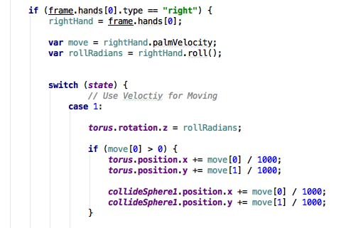

Implementierung
Die Implementierung ist sehr einfach gehalten. Der Ring ist ein Torus Objekt in dessen Mitte
eine Plane liegt, die ständig prüft ob sie noch Kontakt hat zu der Linie oder nicht. Wenn nicht
wird der Zähler der Kollisionen erhöht.
Die Plane ist nötig da Babylon Kollisionen nur mit Bounding Boxes prüft und somit das Loch in
der Mitte des Torus bei Kollisionsabfragen keine Rolle spielt.
Die Linie wird aus 50 kleinen Linien zusammengesetzt, welche per Sinus-Funktion geschwungen
werden.
Die Bewegung des Rings erfolgt im Gegensatz zu den anderen Anwendungen nicht mit fest
getrackten Positionen der Hand oder eines Fingers, sondern erfolgt über die
Bewegungsgeschwindigkeit der Hand zwischen 2 Frames. Die Rotation des Rings wird über die Rotation der
Hand zur Z-Achse gleichgesetzt. Hierfür liefert LeapJS bereits Funktionen wie roll(),pitch() und yaw().

Analyse
Für die Analyse haben 10 Probanden jeweils einen Testdurchlauf und anschließend einen aufgezeichneten Durchlauf absolviert. Getestet wurde auf OSX 10.9.5, Chrome 51.0.2704 und Leap Motion 2.3.1. Nur 2 der Probanden haben es geschafft den Ring ohne Kollision bis zum Ende zu führen. Es war den meisten möglich mit Ruhe und Konzentration wenig Fehler zu begehen und den Ring sehr genau zu führen, aber gerade bei der Rotation kamen Schwierigkeiten auf. Hin und wieder kommt es noch zu kleineren sprunghaften Bewegungen, wenn bei den Tracking Daten Unregelmäßgkeiten auftauchen. Gerade bei der Rotation sind manchmal fehlerhafte Daten, wenn die Drehung der Hand nicht richtig erkannt wird. Insgesamt konnten alle Probaden sehr intuitiv den Ring mit dem Sensor steuern und Fehlerrate hält sich in einem vertretbaren Rahmen.
| Zeit | Kollisionen |
|---|---|
| 14 sec | 4 |
| 9 sec | 6 |
| 16 sec | 2 |
| 20 sec | 1 |
| 17 sec | 0 |
| 11 sec | 9 |
| 14 sec | 0 |
| 17 sec | 3 |
| 10 sec | 5 |
| 19 sec | 2 |
Fazit
| Positiv |
|---|
| Steuerung per Handbewegung sehr intuitiv |
| Bewegung wird sehr genau getrackt und macht pixelgenaues Navigieren möglich |
| Fehlerquote war relativ gering |
| Negativ |
|---|
| Bei der Rotation gibt es teils Sprünge wenn die Drehung der Hand nicht korrekt erkannt wird |
| Nur 2 Probanden schafften den Parkour komplett fehlerfrei |
Demos

Bildbearbeitung
Bildbearbeitung mit Leap Motion und Annyang in einer Babylon 3D Szene.


Geschicklichkeits-Spiel
Teste deine Leap-Motion-Fähigkeiten. Berühre nicht den Draht.